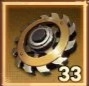
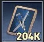
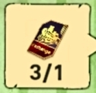
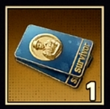
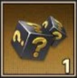
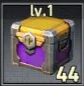
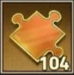
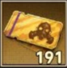
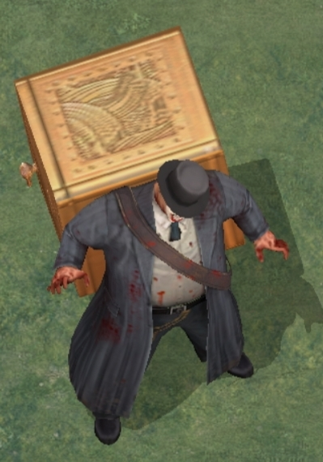
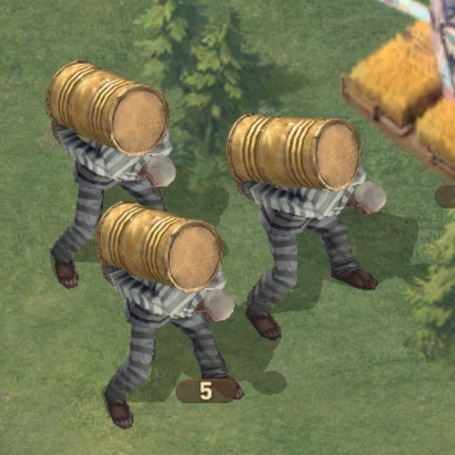

Этот документ — наш свод правил и рекомендаций. Следуя этим принципам, мы сможем развиваться быстрее, эффективно участвовать в ивентах и побеждать в противостояниях с другими альянсами.
Лечение большого количества солдат в госпитале может занимать часы. Действуя сообща, мы ускоряем процесс в разы.
Ежедневные пожертвования — это общий бюджет альянса.








Если атакует сильный игрок:
Не берите только дамагеров — команда должна быть сбалансирована:
На данный момент мы тянем 100 и 110 наблюдателя, в кранем случае 120. На наблюдателей более высокого уровня не ходим, силу наблюдателей можно увидеть кликнув по нему. Человечков с сейфом мы тянем 5 и 10 уровни, 15 тоже, но минимально, большинство разбивается, так что выбираем помельче и собираем команду.


Это ивент на командный урон.
Солдаты в Пандоре не умирают. Они попадают в полевой госпиталь. Лечение бесплатное, но требует времени.
Как лечить быстро: ставьте лечение на 20-30 минут, жмите «Помощь альянса», через 20-30 минут забирайте вылеченных и снова в бой. Также забирайте еще по 15 штук с госпиталя которые вылечили ваши союзники.